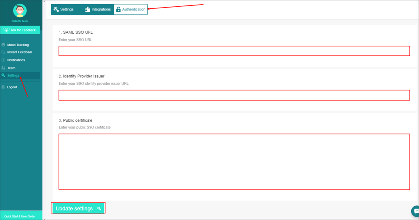
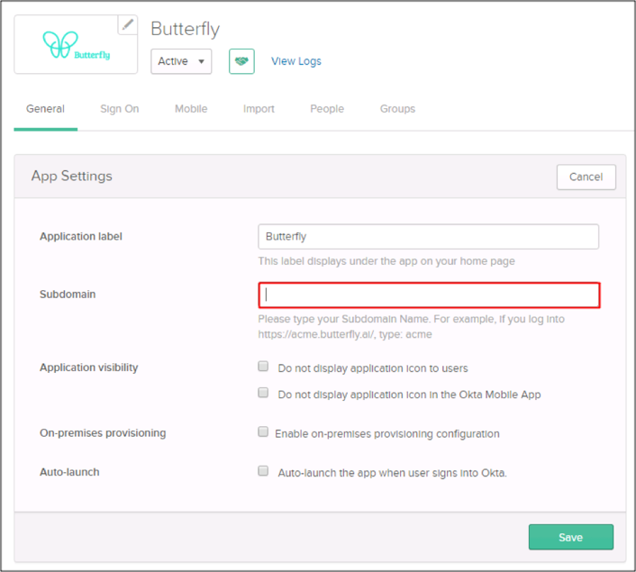
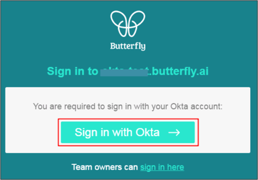

Login to your Butterfly account as an administrator.
Navigate to Settings > Authentication.
Enter the following (see screen shot at end of step for reference):
SAML SSO URL: Copy and paste the following:
Sign into the Okta Admin Dashboard to generate this variable.
Identity Provider Issuer: Copy and paste the following:
Sign into the Okta Admin Dashboard to generate this variable.
Public Certificate: Copy and paste the following (PEM text format):
Sign into the Okta Admin Dashboard to generate this variable.
Click Update settings:

In Okta, select the General tab for the Butterfly app, then click Edit:
Enter your [your-butterfly-subdomain] into the Subdomain field.
Click Save:

Notes:
IDP-initiated flows and SP-initiated flows are supported.
Just In Time (JIT) Provisioning is not supported.
Go to https://[your-butterfly-subdomain].butterfly.ai/login.
Click Sign in with Okta.
